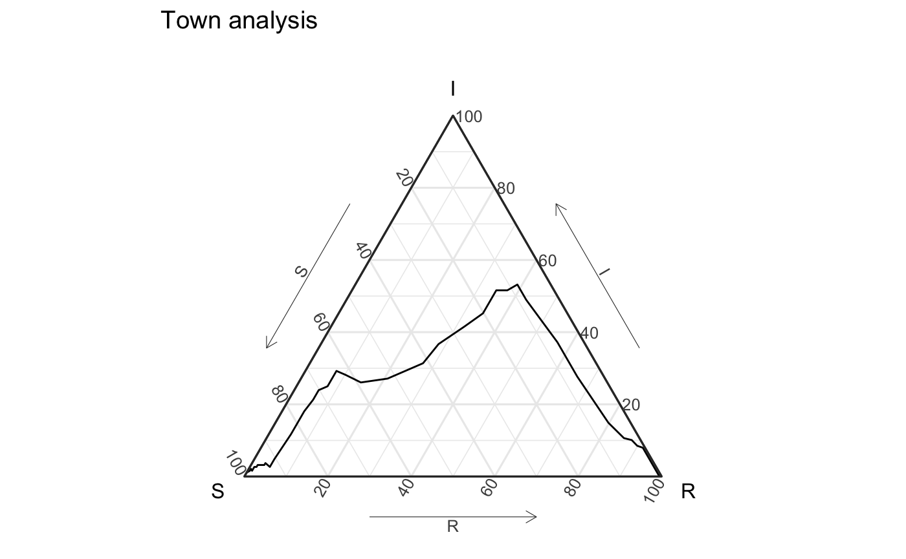
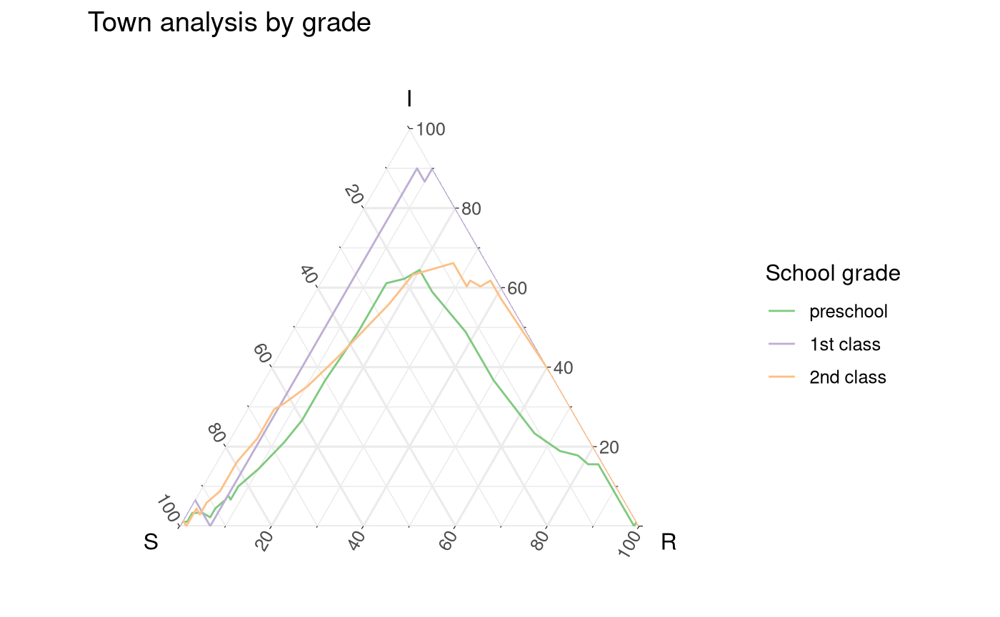
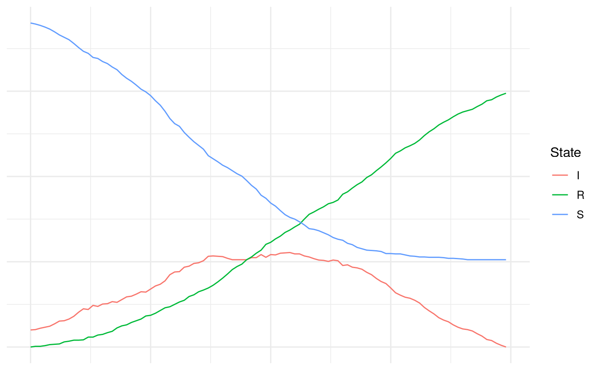
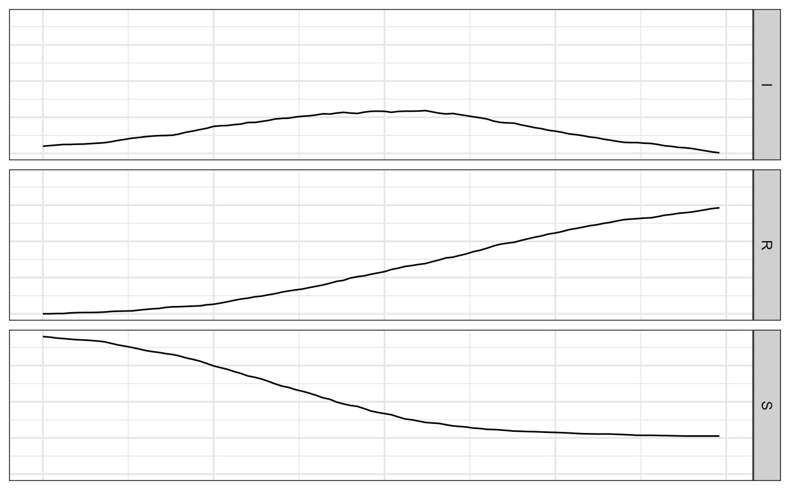
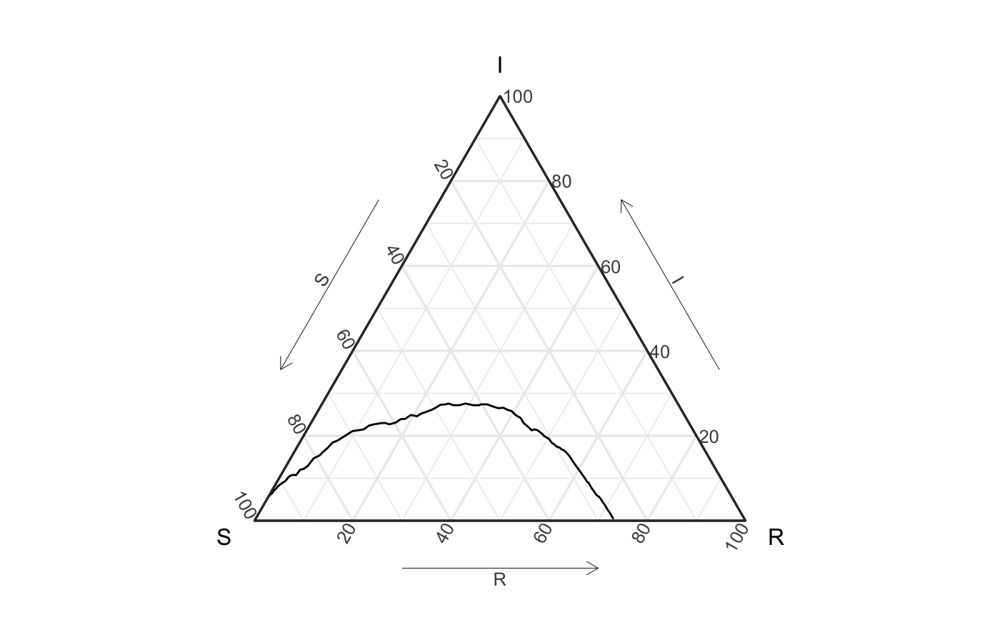
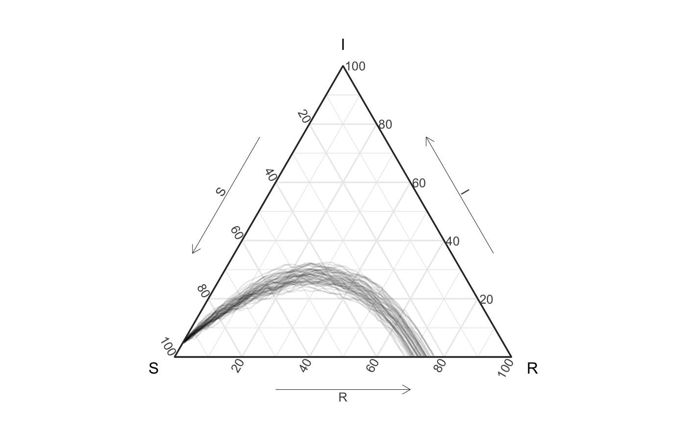
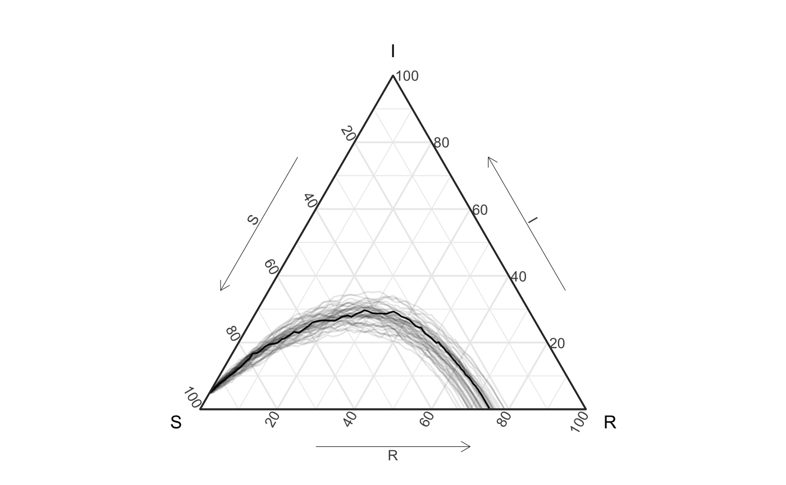
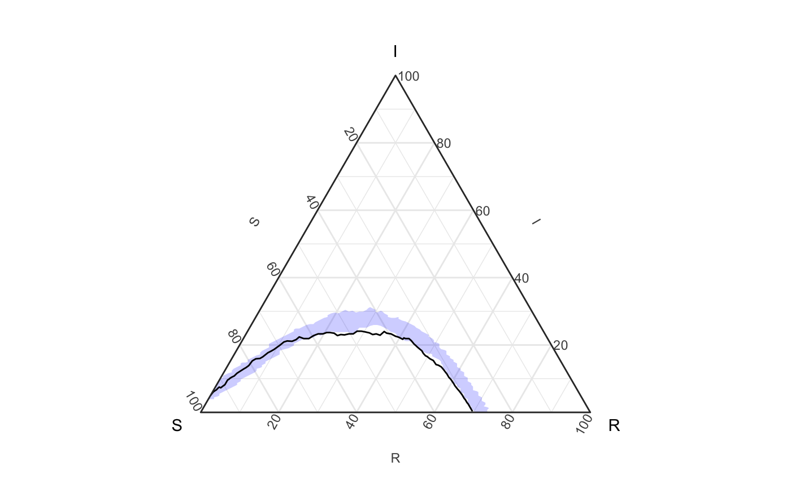
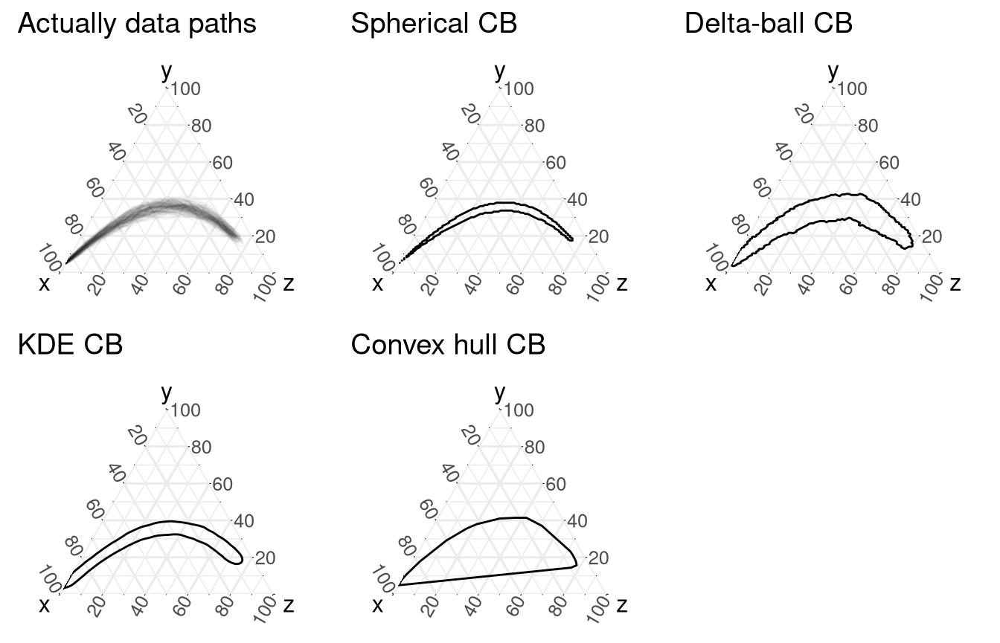

To install EpiCompare, run the folllowing code.
if(!require(EpiCompare)){ library(devtools) devtools::install_github("skgallagher/EpiCompare") } library(EpiCompare)
This “quickstart” guide presents how to:
geom_aggregate to quickly compare groups of the population’s experience of the epidemic.agents_to_aggregate to convert data from agents to aggregate, and leveraging geom_prediction_band to express uncertainty and centrality of simulations. This example also gives an example of the internal simulate_SIR_agents function.Our first example comes from a Measles outbreak in Hagelloch, Germany in 1861. We have data on each child (agent) in the town.The data we use (as seen below) has each child’s information relative to when they were reported to be infected and recovered along with information on their school class.
## Visualizing epidemic progression using EpiCompare library(kableExtra) EpiCompare::hagelloch_raw %>% head() %>% select(PN, NAME, AGE, SEX, tPRO, tERU, tI, tR) %>% knitr::kable() %>% kableExtra::kable_styling()
| PN | NAME | AGE | SEX | tPRO | tERU | tI | tR |
|---|---|---|---|---|---|---|---|
| 1 | Mueller | 7 | female | 22.71242 | 26.22541 | 21.71242 | 29.22541 |
| 2 | Mueller | 6 | female | 24.21169 | 28.79112 | 23.21169 | 31.79112 |
| 3 | Mueller | 4 | female | 29.59102 | 33.69121 | 28.59102 | 36.69121 |
| 4 | Seibold | 13 | male | 28.11698 | 29.02866 | 27.11698 | 32.02866 |
| 5 | Motzer | 8 | female | 23.05953 | 28.41510 | 22.05953 | 31.41510 |
| 6 | Motzer | 12 | male | 27.95444 | 30.23918 | 26.95444 | 33.23918 |
One way to understand an epidemic is to view examine it through an “aggregate” lens. In EpiCompare, we can use the function geom_aggregate, which aggregates across agents to find the number of susceptible, infectious, and recovered agents at each time step and displays them in a ternary plot, which allows us to simultaneously view the \(S\), \(I\), and \(R\) components.
theme_set(theme_sir()) hagelloch_raw %>% ggplot(aes(y = tI, z = tR)) + geom_aggregate() + coord_tern() + labs(x = "S", y = "I", z = "R", title = "Town analysis") #> Coordinate system already present. Adding new coordinate system, which will replace the existing one.

Previous work has suggested that the class (CL) the student was in effected how the experienced the outbreak. The below figure shows differences in the outbreak relative to this grouping.
hagelloch_raw %>% rename(`school grade` = CL) %>% group_by(`school grade`) %>% summarize(`# of students` = n(), .groups = "drop") %>% knitr::kable() %>% kableExtra::kable_styling()
| school grade | # of students |
|---|---|
| preschool | 90 |
| 1st class | 30 |
| 2nd class | 68 |
hagelloch_raw %>% ggplot(aes(y = tI, z = tR, color = CL)) + geom_aggregate() + coord_tern() + labs(x = "S", y = "I", z = "R", color = "School grade", title = "Town analysis by grade") + scale_color_brewer(type = "qual") #> Coordinate system already present. Adding new coordinate system, which will replace the existing one.

simulate_SIR_agents.The below code simulates SIR data at the individual (or agent) level, aggregates it into SIR format, and plots it in the ``standard’’ view of percent in state vs. time.
n_sims <- 1 n_time_steps <- 100 beta <- .1 gamma <- .03 init_SIR <- c(950, 50, 0) out <- EpiCompare::simulate_SIR_agents(n_sims = n_sims, n_time_steps = n_time_steps, beta = beta, gamma = gamma, init_SIR = init_SIR) df_ave <- out %>% agents_to_aggregate(states = c(tI, tR)) %>% rename(S = "X0", I = "X1", R = "X2") %>% group_by(t) %>% summarize(S = mean(S), I = mean(I), R = mean(R), .groups = "drop") df_ave_lines <- df_ave %>% pivot_longer(names_to = "State", values_to = "Value", cols = c(S, I, R)) ggplot(data = df_ave_lines, aes(x = t, y = Value, group = State, col = State)) + geom_line()

ggplot(data = df_ave_lines, aes(x = t, y = Value)) + facet_grid(State ~ .) + geom_line()

We visualize this simulation with a single line in the following way.
ggplot(data = df_ave, aes(x = S, y = I, z = R)) + geom_path() + coord_tern() #> Coordinate system already present. Adding new coordinate system, which will replace the existing one.

We can also simulation multiple epidemics with different parameters (and can also examine simulations from both pomp and epiModels packages).
Using the same simulation parameters above we can simulate 50 epidemics:
n_sims <- 50 # only code changed n_time_steps <- 100 beta <- .1 gamma <- .03 init_SIR <- c(950, 50, 0) out <- EpiCompare::simulate_SIR_agents(n_sims = n_sims, n_time_steps = n_time_steps, beta = beta, gamma = gamma, init_SIR = init_SIR)
We then use the agents_to_aggregate function to do the same thing (note that it preforms different for grouped_dfs and standard data.frames - as it’s a method):
df_group <- out %>% group_by(sim) %>% agents_to_aggregate(states = c("tI", "tR")) %>% rename(S = "X0", I = "X1", R = "X2") ggplot(df_group, aes(x = S, y = I, z = R, group = sim)) + geom_path(alpha = .1) + coord_tern() #> Coordinate system already present. Adding new coordinate system, which will replace the existing one.

What’s more if we want to compare the original simulation with these new simulations (and see how well they match) we can do the following:
ggplot() + geom_path(data = df_ave, aes(x = S, y = I, z = R)) + geom_path(data = df_group, aes(x = S, y = I, z = R, group = sim), alpha = .1) + coord_tern() #> Warning: Ignoring unknown aesthetics: z #> Warning: Ignoring unknown aesthetics: z #> Coordinate system already present. Adding new coordinate system, which will replace the existing one.

How extreme is the first simulation compared to the rest? Let’s create a empirical 95% prediction band from the later simulations.
ggplot() + geom_prediction_band(data = df_group, aes(x = S, y = I, z = R, sim_group = as.numeric(as.character(sim))), fill = "blue", color = NA, alpha = .2, conf_level = .95, grid_size = rep(100, 2), pb_type = "delta_ball" ) + geom_path(data = df_ave, aes(x = S, y = I, z = R)) + coord_tern() #> Warning: Ignoring unknown aesthetics: z #> Coordinate system already present. Adding new coordinate system, which will replace the existing one. #> Due to dist_params$dist_approach = "equa_dist", this may take a little while - see `filament_compression` examples for a work-around if you're making this plot multiple times

# note: the error message actually comes from the geom_path
Here’s a demo of all current geometric tools to create prediction bands:
vis_data <- EpiCompare::pomp_df %>% rename(x = "S", y = "I", z = "R") %>% ggplot(aes(x = x, y =y, z = z, group = .id)) + geom_path(alpha = .03) + coord_tern() + labs(title = "Actual simulation paths") #> Coordinate system already present. Adding new coordinate system, which will replace the existing one. vis_spherical <- EpiCompare::pomp_df %>% rename(x = "S", y = "I", z = "R", t = "time") %>% ggplot(aes(x = x, y = y, z = z, t = t)) + geom_prediction_band(pb_type = "spherical_ball", grid_size = rep(100,2), conf_level = .95) + coord_tern() + labs(title = "Spherical CB") #> Coordinate system already present. Adding new coordinate system, which will replace the existing one. vis_delta_ball <- EpiCompare::pomp_df %>% rename(x = "S", y = "I", z = "R") %>% mutate(.id = as.numeric(.id)) %>% ggplot(aes(x = x, y = y, z = z, sim_group = .id)) + geom_prediction_band(pb_type = "delta_ball", grid_size = rep(100,2), conf_level = .95) + coord_tern() + labs(title = "Delta-ball CB") #> Coordinate system already present. Adding new coordinate system, which will replace the existing one. vis_kde <- EpiCompare::pomp_df %>% rename(x = "S", y = "I", z = "R") %>% mutate(.id = as.numeric(.id)) %>% ggplot(aes(x = x, y = y, z = z, sim_group = .id)) + geom_prediction_band(pb_type = "kde", grid_size = rep(100,2), conf_level = .95) + coord_tern() + labs(title = "KDE CB") #> Coordinate system already present. Adding new coordinate system, which will replace the existing one. vis_convex_hull <- EpiCompare::pomp_df %>% rename(x = "S", y = "I", z = "R") %>% mutate(.id = as.numeric(.id)) %>% ggplot(aes(x = x, y = y, z = z, sim_group = .id)) + geom_prediction_band(pb_type = "convex_hull", conf_level = .95) + coord_tern() + labs(title = "Convex hull CB") #> Coordinate system already present. Adding new coordinate system, which will replace the existing one. grid.arrange(vis_data, vis_spherical, vis_delta_ball, vis_kde, vis_convex_hull, nrow = 2) #> Due to dist_params$dist_approach = "equa_dist", this may take a little while - see `filament_compression` examples for a work-around if you're making this plot multiple times #> Due to dist_params$dist_approach = "equa_dist", this may take a little while - see `filament_compression` examples for a work-around if you're making this plot multiple times
